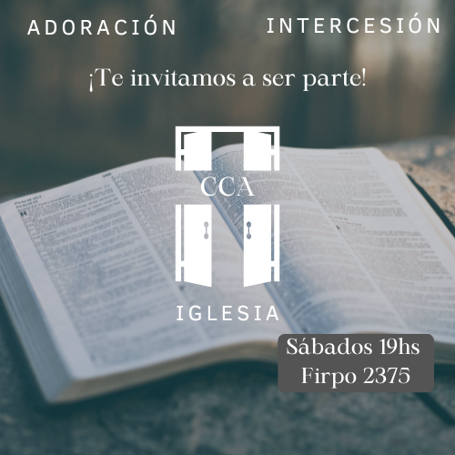

Días y Horarios de las Reuniones
- Reuniones generales: Sábados a las 19:00hs
- Reuniones de Intercesión: Miércoles a las 19:00hs
- Intercesión (via zoom): Martes a las 21:00hs
- Puertas del Alba (via zoom): Sábados a las 6:00hs (De la mañana)
¡¡¡NO TE LO PIERDAS!!!
¡¡¡TE ESPERAMOS!!!

- Luis Ángel Firpo 2375, Barrio Zumarán;
- Cordoba Capital
 Nuestra ubicación: Maps
Nuestra ubicación: Maps
Contacto y redes
 Nuestro whatsapp: 3515189273
Nuestro whatsapp: 3515189273 Nuestro instagram: @Cca_cordoba
Nuestro instagram: @Cca_cordoba Nuestro youtube: Cca Córdoba
Nuestro youtube: Cca Córdoba
También podes escribirnos a este gmail: Comunidadcristianapostolica@gmail.com
¿Qué son las iglesias en casa?
Es una actividad semanal que implica dividirnos en grupos y reunirnos en la casa de algun integrante. Luego, compartimos un devocional en particular, que se expone a la congregación.
Esto fomenta el crecimiento espiritual y permite entender la palabra desde diversas perspectivas, utilizando métodos creativos como actuaciones, cortometrajes o canciones.